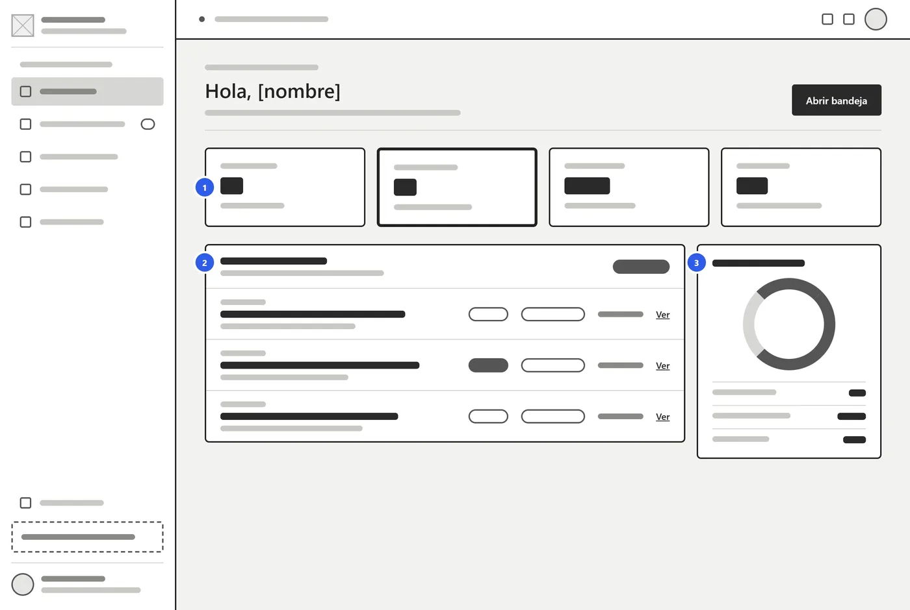
01 · Lo-fi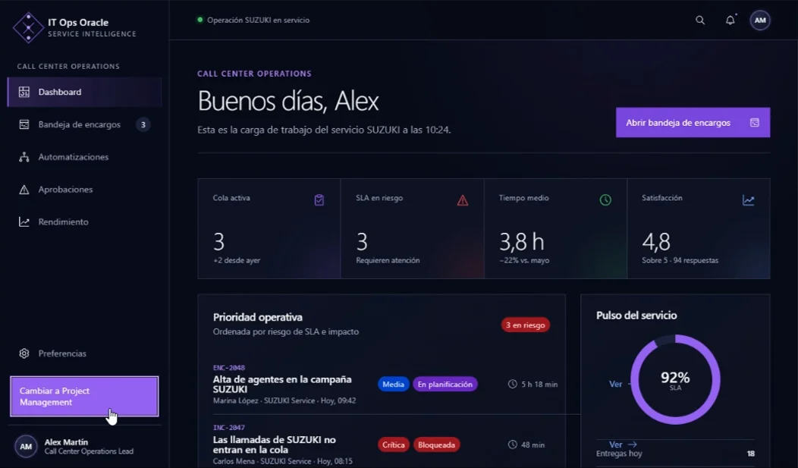
FinalDashboard operacionalOperational dashboardObjetivo: detección < 30 sTarget: detection < 30 s
Sep 2024 – Actualidad · En producción. Optimización de la conversión del canal directo: motor de reservas y home recompuesta.
Sep 2024 – Present · In production. Direct-channel conversion optimisation: booking engine and recomposed homepage.
Jun–Sep 2024 · Rev. 2026. Auditoría de 47 componentes, 17 construidos y criterios WCAG 2.1 AA en los flujos evaluados.
Jun–Sep 2024 · Rev. 2026. 47 components audited, 17 built, and WCAG 2.1 AA criteria applied to the audited flows.
2022–2024 · Rev. 2026. Propuesta Build vs. Buy, no implementada: 56,5 h/mes de trabajo manual medidas.
2022–2024 · Rev. 2026. Build vs. Buy proposal, not implemented: 56.5 h/month of manual work measured.
Bootcamp 2024 · Rev. 2026. UX research en un equipo de 8: 12 entrevistas sobre por qué los socios abandonan.
Bootcamp 2024 · Rev. 2026. UX research in a team of 8: 12 interviews on why members drop out.
2020–2022 · Rev. 2026. Marca, carta QR y web de pedidos propia: +28% en pedidos directos online.
2020–2022 · Rev. 2026. Brand, QR menu and in-house ordering site: +28% direct online orders.
De 56,5 h/mes en hojas de cálculo a una herramienta propia.From 56.5 h/month in spreadsheets to an in-house tool.
Entrevistas y shadowing: el problema era un flujo concreto que ninguna herramienta resolvía de fábrica.Interviews and shadowing: the problem was one specific workflow no off-the-shelf tool solved.
3 patrones de fricción3 friction patterns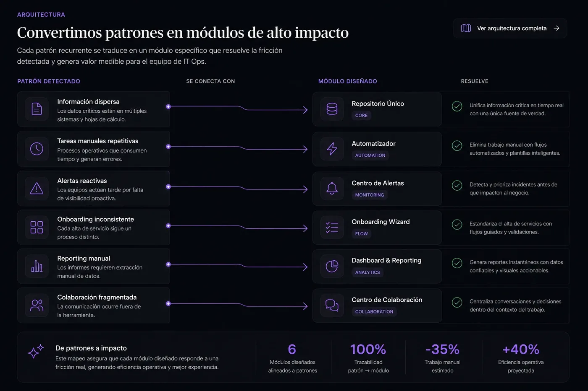
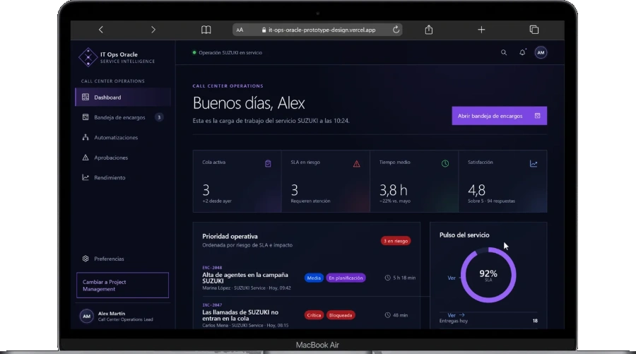

01 · Lo-fi
Final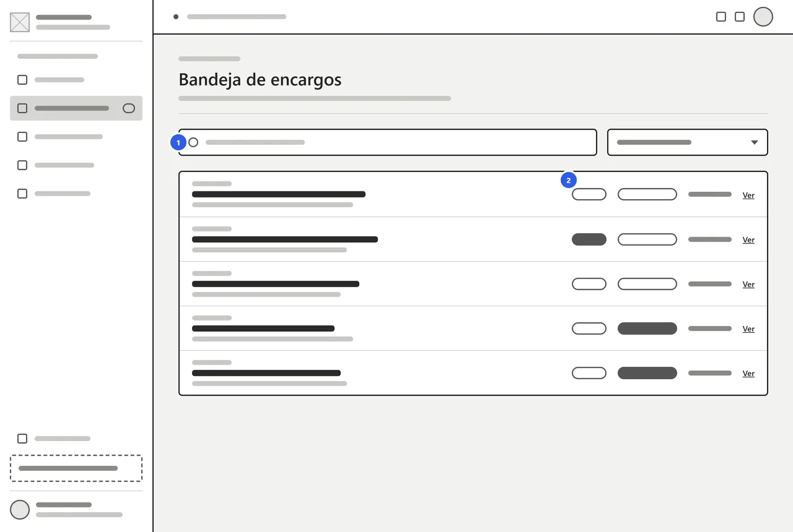
02 · Lo-fi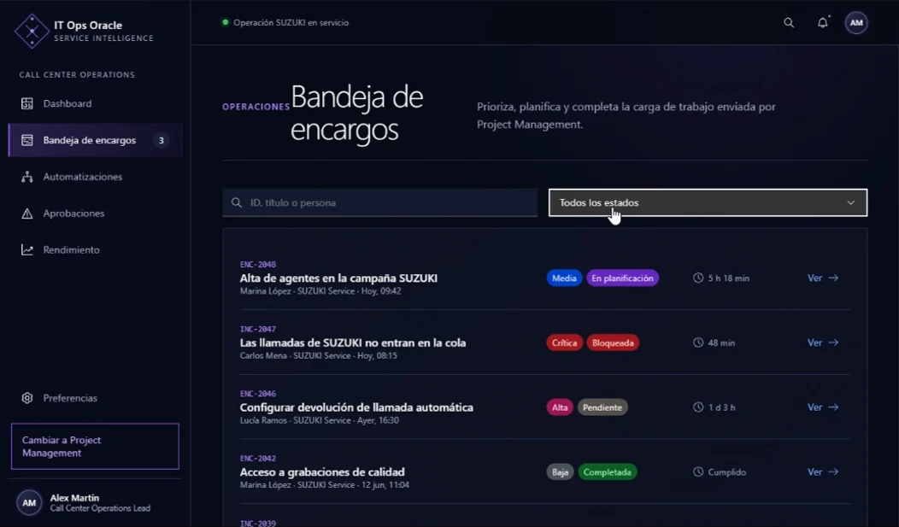
Final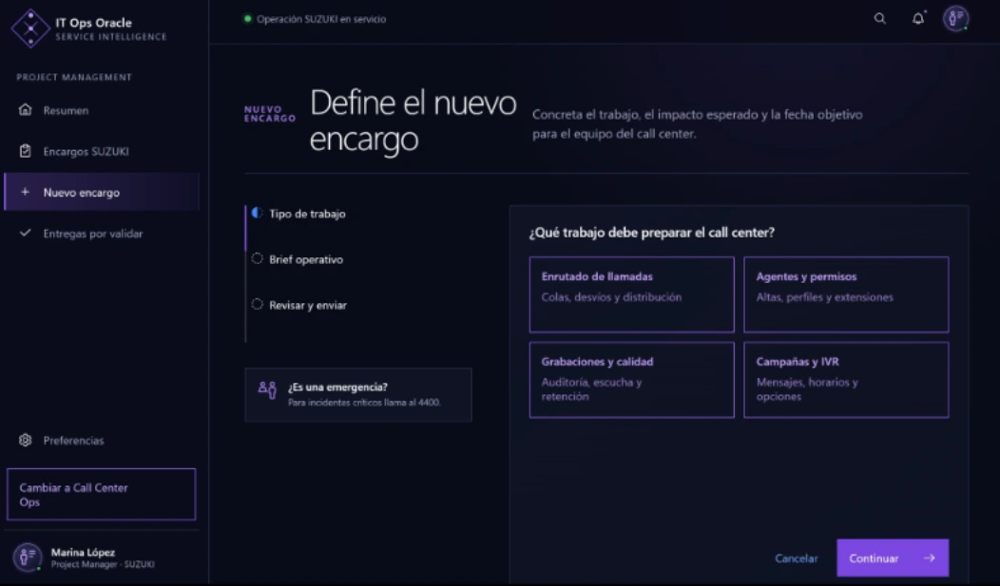
Final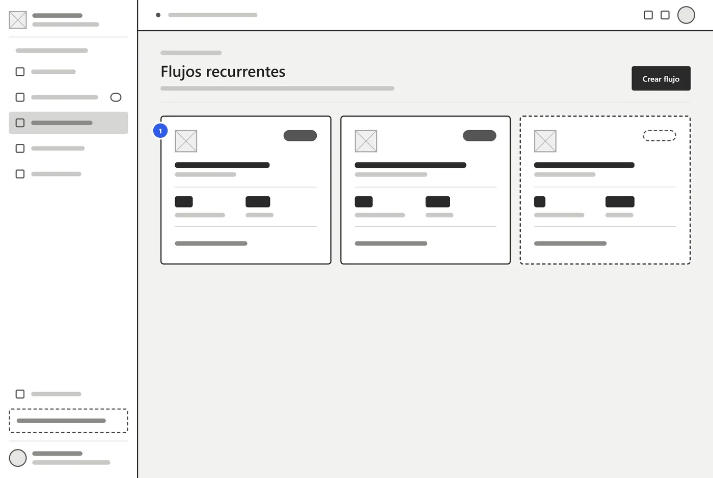
04 · Lo-fi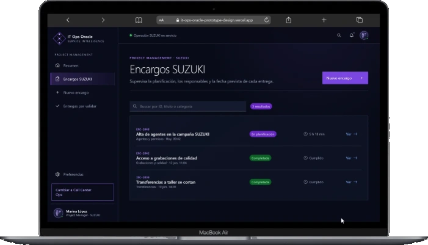
Final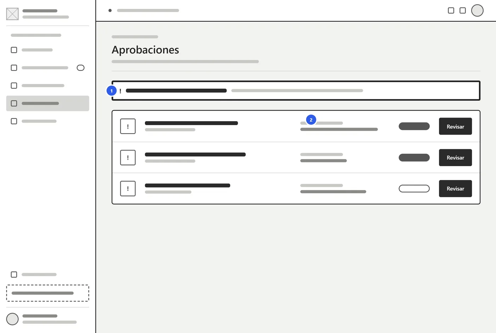
05 · Lo-fi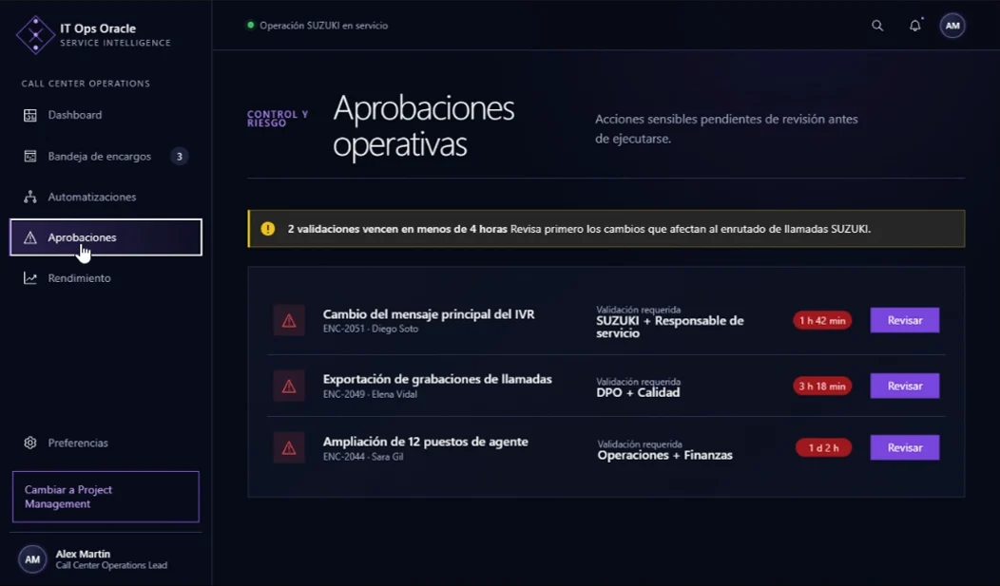
Final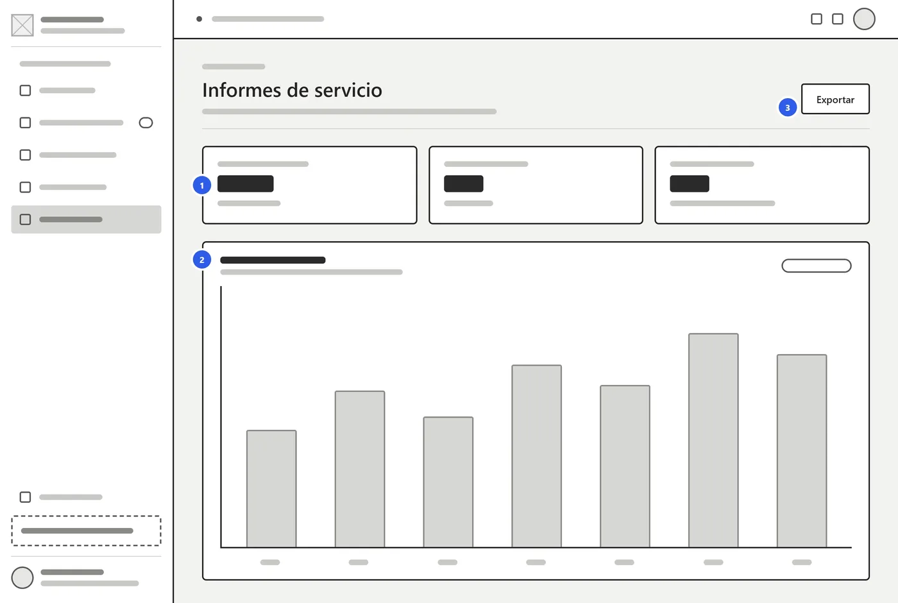
06 · Lo-fi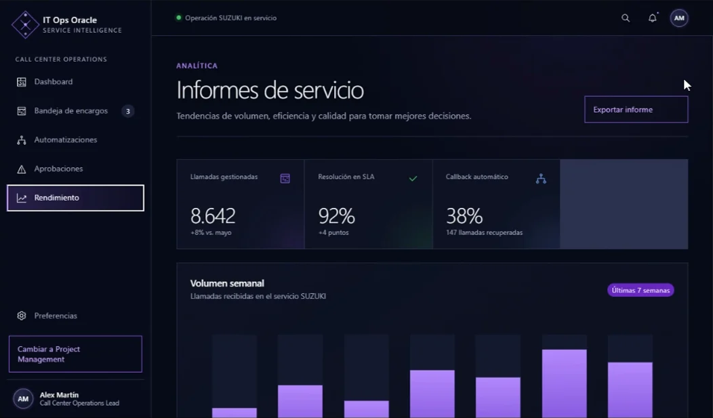
Final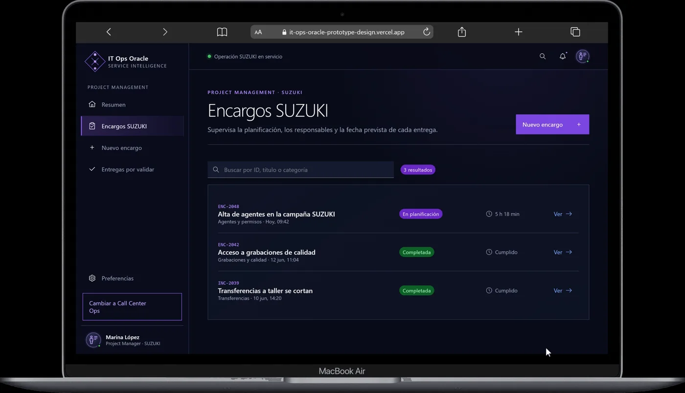
Abrir prototipoOpen prototype ↗De 56,5 h/mes en hojas de cálculo a una herramienta propia.From 56.5 h/month in spreadsheets to a custom tool.
perdidas en inventarios críticos gestionados con Excel.lost managing critical inventory in Excel.
Suite modular a medida en lugar de licencias COTS.A modular custom suite instead of COTS licences.
reducción potencial estimada de horas de gestión manual.estimated potential reduction in manual admin hours.
Entrevistas y shadowing: el problema era un flujo concreto que ninguna herramienta resolvía de fábrica.Interviews and shadowing: the problem was one specific workflow no tool solved out of the box.
La compra de un COTS estaba sobre la mesa. El discovery inclinó la decisión hacia construir solo lo que el equipo necesitaba.Buying a COTS tool was on the table. Discovery tipped the decision towards building only what the team needed.
Los mismos datos, a mano, entre 3 sistemas.The same data, by hand, across 3 systems.
Nadie sabía quién había tocado cada servidor.Nobody knew who had changed each server.
Alertas que saturaban al equipo de guardia.Alerts flooding the on-call team.
Cada columna del Excel se asignó a una entidad. Cada entidad, a un módulo de tarea única.Each Excel column was mapped to an entity. Each entity, to a single-task module.
En la propuesta, las tareas que se repetían cada mes pasaban a ejecutarse solas.In the proposal, tasks that repeated every month would run on their own.
módulos en el prototipo de 2026modules in the 2026 prototype
columnas convertidas en móduloscolumns turned into modules
de discovery a prototipofrom discovery to prototype
discrepancias de inventarioinventory discrepancies
resolución media de alertasaverage alert resolution
adopción voluntariavoluntary adoption
Definidos con el IT Ops Lead; no se midieron en producción.Set with the IT Ops Lead; not measured in production.
Un ingeniero quiere datos y atajos de teclado.Engineers want data and keyboard shortcuts.
Menos coste y adaptación que personalizar un COTS.Lower cost and ramp-up than customising a COTS.
El shadowing destapó hábitos que ningún cuestionario recoge.Shadowing surfaced habits no survey would capture.
Recorre la bandeja de encargos de IT Ops, las aprobaciones en 2 clics y los flujos recurrentes del prototipo. Explore the IT Ops request inbox, 2-click approvals and recurring workflows in the prototype.
Cómo una auditoría de campo identificó cuatro patrones de fallo en hojas de cálculo y llevó a proponer una herramienta a medida en lugar de licencias estándar. How contextual inquiry uncovered four failure patterns in spreadsheets and led to proposing a custom tool instead of commercial licences.

Los ingenieros gestionaban inventarios críticos mediante excels manuales con discrepancias constantes y riesgo operacional.Engineers managed critical server inventory across desynced Excel sheets with high operational risk.
Diseño de una interfaz centrada en la tarea con sincronización automática en la nube y visualización de incidencias.Task-first interface with automated cloud sync, real-time alert triage and inventory audit logs.
Reducción de horas de gestión manual · Cero errores de discrepancia de datos en auditorías.Drop in manual administrative hours · Zero data discrepancy errors in compliance audits.
La empresa se planteaba adquirir una solución COTS (Commercial Off-The-Shelf) costosa para gestionar la infraestructura. A través de entrevistas y shadowing vi que el problema real radicaba en un flujo de trabajo específico que ninguna herramienta comercial resolvía de fábrica.Management considered an expensive commercial off-the-shelf software. Contextual shadowing showed that the core problem was a specific workflow no off-the-shelf tool handled out of the box.
Tiempo manual perdido mensualmente en hojas Excel no integradasManual engineering hours wasted per month in siloed Excel sheets
Oracle Cloud ERP sobredimensionado y rechazado por el equipo operativoOracle Cloud ERP overengineered and rejected by on-the-ground IT ops
Hojas de cálculo fragmentadas sin validación de datos ni trazabilidadFragmented spreadsheets with zero data validation or audit trail
Falta de alineación entre requerimientos de Finanzas y Operaciones de TIMisalignment between Finance compliance and IT engineering workflows
El problema no era la interfaz de Oracle, sino haber elegido el software equivocado.The issue was not Oracle's UI, but choosing the wrong tool for this org.
Prototipar a baja fidelidad una herramienta interna a medida (Build vs Buy).Prototype low-fidelity custom internal tooling (Build vs Buy strategic choice).
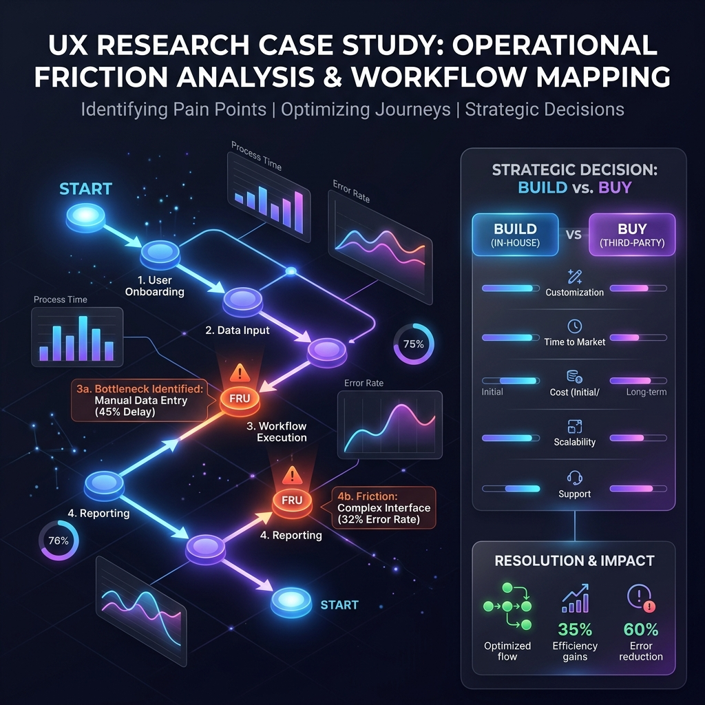
Múltiples ventanas, hojas de cálculo desactualizadas y comprobación manual. Disjointed spreadsheets, manual queries and high human error rate.
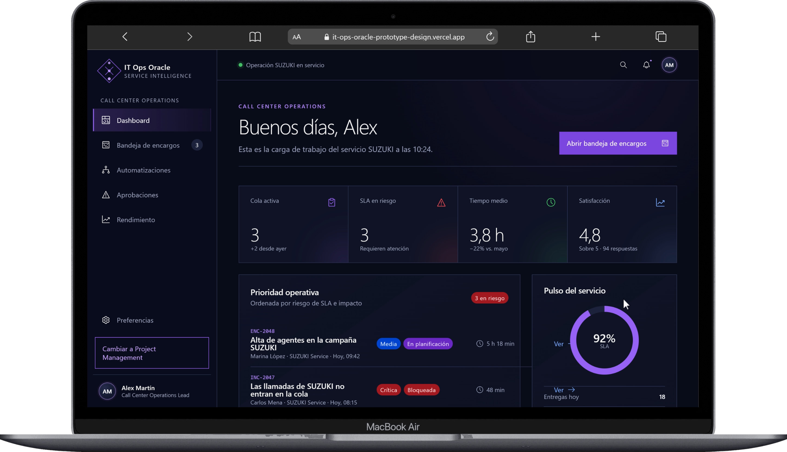
Consola unificada con triaje de alertas y sincronización cloud en tiempo real. Centralized dashboard with alert triage and real-time cloud synchronization.
Como Product Designer, mi mayor responsabilidad en este proyecto fue evitar el despilfarro de semanas de ingeniería construyendo sobre suposiciones. A través de prototipos Lo-Fi en escala de grises, desglosé 50+ columnas caóticas de Excel y validé con el IT Ops Lead la arquitectura de triaje, la densidad de información y los permisos de auditoría antes de escribir una sola línea de frontend. As a Product Designer, my primary responsibility was preventing wasted engineering cycles based on unvetted assumptions. Through greyscale low-fidelity wireframes, I untangled 50+ fragmented spreadsheet columns and validated data triage, visual density, and compliance audit workflows directly with the IT Ops Lead before committing to code.
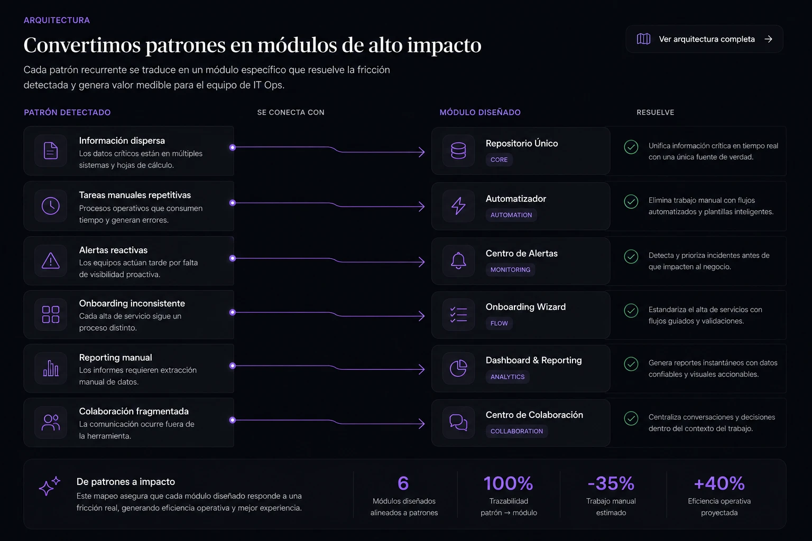
Mapeo exhaustivo de los campos que los ingenieros gestionaban a mano. Traduje decenas de columnas desincronizadas en 6 entidades modulares: salud de nodos, ciclo de vida de tickets, histórico inmutable de auditoría, automatizaciones programadas, matriz de firmas y cumplimiento de SLAs. Exhaustive mapping of legacy spreadsheet fields. I translated dozens of disjointed columns into 6 modular data models: server node health, ticket lifecycles, immutable audit logs, scheduled routines, approval matrices, and SLA compliance analytics.
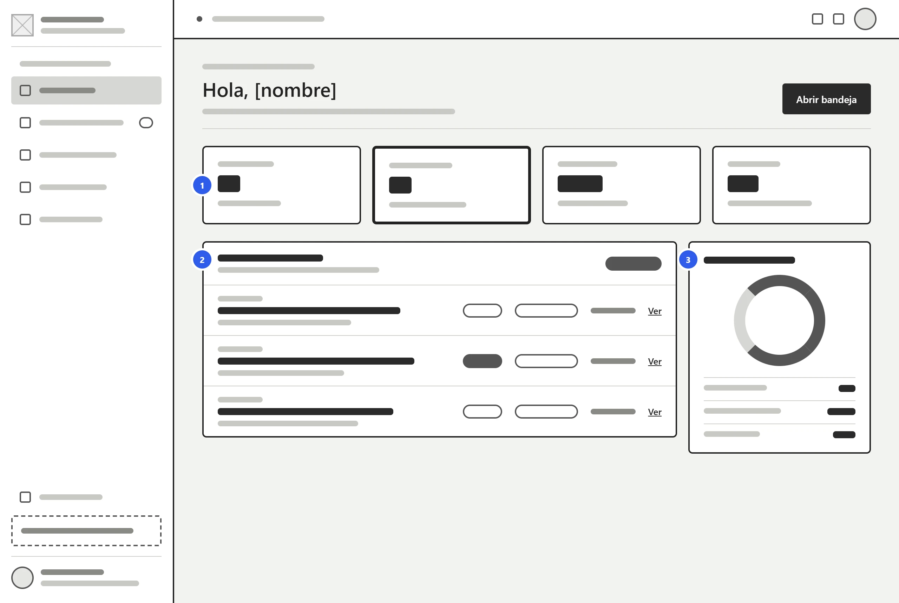
Diseñado para escaneo visual en menos de 5 segundos. Centraliza el estado de servidores cloud, alertas activas priorizadas y balance de carga, eliminando la necesidad de abrir 3 consolas distintas. Engineered for sub-5 second scanning. Consolidates cloud server health, prioritized alerts, and workload distribution, eradicating context switching across 3 consoles.
Sustituyó los hilos de Slack y correos perdidos. Permite filtrar tickets por criticidad (Baja a Crítica), SLA restante, departamento y responsable asignado con ordenación por teclado. Replaced messy Slack threads and lost emails. Enables keyboard-first sorting by severity, SLA countdown, department, and assignee.
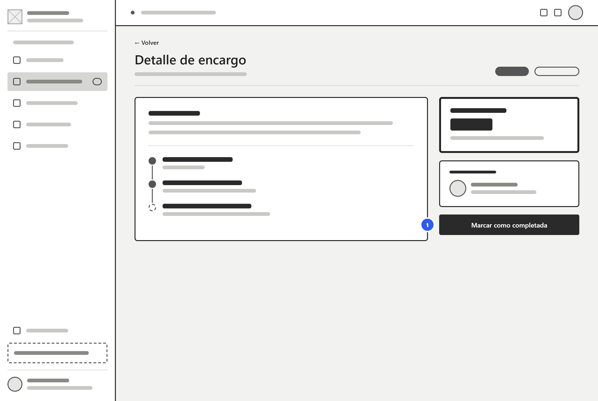
Registro inmutable que documenta cada cambio de configuración, quién lo ejecutó y en qué timestamp. Incluye panel lateral de acciones contextuales para resolver sin salir de la vista. Immutable log documenting every configuration change, actor, and timestamp. Features contextual action drawer for seamless in-place resolution.
Configuración visual de rutinas periódicas (backups nocturnos, rotación de claves y purga de logs). En la propuesta, este módulo atacaba las tareas manuales recurrentes. Visual scheduler for recurring routines (nightly backups, key rotation, log purge). In the proposal, this module targeted recurring manual work.
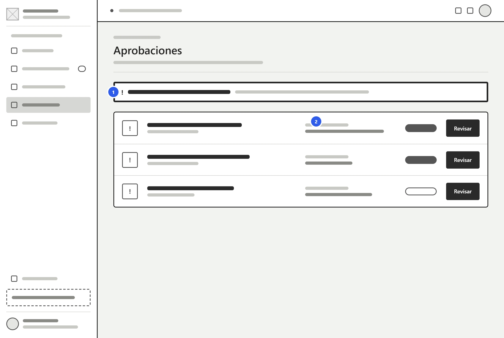
Matriz de validación para despliegues en servidores de producción. Permite a los leads técnicos evaluar el impacto del cambio y autorizarlo con 1 clic con previsualización de dependencias. Validation matrix for production server changes. Empowers technical leads to inspect blast radius and grant 1-click approvals with dependency previews.
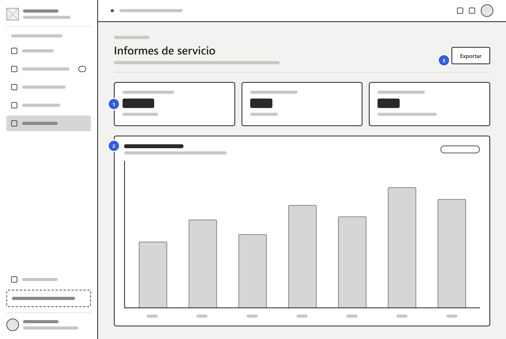
Cuadro analítico con tiempo medio de resolución (MTTR), tasa de cumplimiento de SLAs por departamento y salud de infraestructura, aportando métricas objetivas a dirección. Analytical suite tracking MTTR (mean time to resolution), department SLA compliance rates, and infrastructure availability for executive visibility.
Prototipar antes de programar para reducir el riesgo técnicoPrototype before writing code to reduce technical risk
Reducción potencial estimada de tareas manualesEstimated potential reduction in manual work
Discrepancias en inventario de sistemasInventory data discrepancies
Tiempo medio de resolución de alertasAverage alert triage time
Adopción voluntaria del equipo técnicoVoluntary engineering adoption
Ahorro manual mensualMonthly toil saved
Alineación stakeholdersStakeholder alignment
Flujos operativos resueltosCore workflows defined
La primera tentación es rediseñar la UI; el verdadero reto es diagnosticar negocioThe initial reflex is to tweak UI; the real challenge is business diagnosis
Un Excel caótico es la mayor señal de que existe un problema de productoA chaotic spreadsheet is the clearest evidence of an unaddressed product need
Saber cuándo un software estándar no encaja es una decisión de productoKnowing when off-the-shelf software does not fit is a product decision
Los ingenieros de IT no necesitan interfaces decorativas; necesitan densidad de información y rapidez de teclado.System engineers value information density and keyboard shortcuts over decorative UI.
Para un flujo muy específico, la propuesta fue una solución ligera a medida en lugar de personalizar una herramienta externa.For a very specific workflow, the proposal was a lean custom build rather than customising an external tool.
Ver trabajar a los usuarios en directo reveló hábitos que jamás habrían surgido en un cuestionario.Watching users perform daily tasks revealed silent workarounds surveys never catch.
De la investigación cualitativa inicial al diseño que mueve métricas de negocio y a los sistemas a escala.From early qualitative research to design that moves business metrics and to systems at scale.